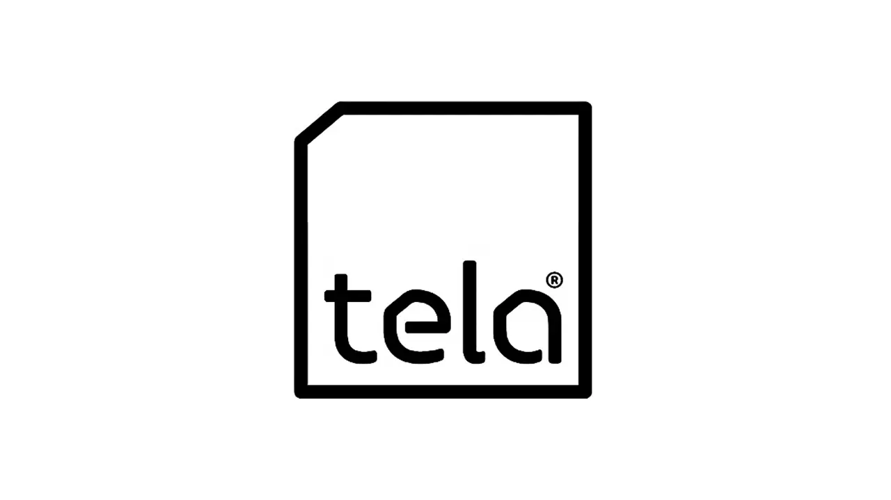

Service Stack
What I do
Virtualisation
I design, develop, and maintain cutting-edge virtual solutions using VM Ware, Azure, and Proxmox. I've implemented robust solutions for SMEs and government departments, managing virtual servers and desktops, crafting secure SFTP solutions, and deploying monitoring systems. My experience covers various aspects of virtualisation at all operational levels.
Documentation
I am passionate about documentation, creating clear and practical resources for business continuity and operational efficiency. I have developed disaster recovery plans, standard operating procedures, and onboarding guides for new starters, ensuring knowledge is preserved and accessible. I'm familiar with common tools for producing structured, resilient, and user-friendly documentation.
IT Support
I specialise in IT support for both on premises architecture and cloud environments. I've supported organisations with as little as two people all the way up to government agencies. I've also supported a wide range of technologies, including Windows, macOS, Linux, and Android. I have a deep familiarity with OneDrive, SharePoint, Windows Server, Windows 10/11, VM Ware, and Azure.
Who I am
IT Professional
I’m Ben, a Virtualisation Engineer and Information Security Analyst with several years of experience across infrastructure, virtualisation, disaster recovery, documentation, automation, and information security. I also hold a First Class degree in Computer Science and am a member of the British Computer Society.
IT has been part of my life for as long as I can remember, and I’ve been lucky enough to turn that interest into a career. Over the years, I’ve worked across environments ranging from small businesses to large enterprise setups, helping to keep systems stable, secure, and manageable.
I’m particularly interested in practical IT that makes life easier for the people relying on it. Whether that’s improving infrastructure, reducing vulnerabilities, writing clear documentation, or automating the boring bits, I like building solutions that are useful, reliable, and easy to support.
Oh, and there are a bunch of easter eggs hidden throughout the site! Can you find them?
Technologies I Use:
Windows Linux Cloud Technologies On-Prem Servers Automation/CodeBuilt & Trusted
My Work
What I've Made...
Who I've Worked For...

Local Context
Where Am I Based?
Leicester, UK